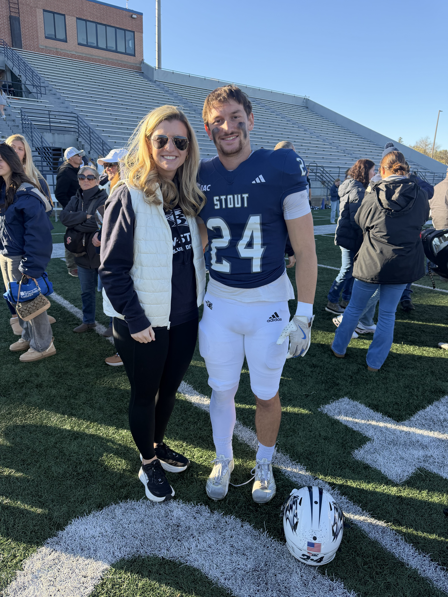

01 / LITTLE BROTHER

My little brother, Joseph
He's a senior at UW-Stout studying mechanical engineering and has spent the last four years playing college football. This is his final season, and watching him work toward something he's dedicated so much time to has made me incredibly proud.
It's hard to believe my little brother is already a senior!